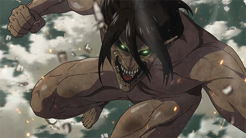
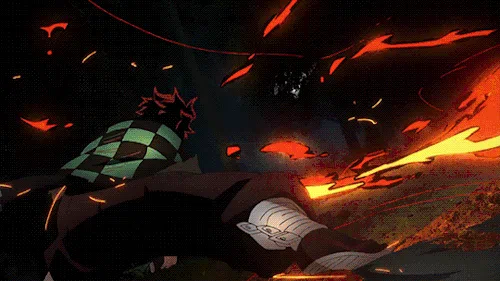

-
Tokyo Ghoul #001

- Ghoul
Em Tóquio, criaturas conhecidas como ghouls vivem entre os humanos e os devoram para sobreviver. Dentre eles, o jovem universitário Ken Kaneki leva uma vida pacata entre livros, até que um trágico encontro o coloca diante desses seres e o obriga a lutar por sua humanidade.
-
Attack on Titan #002
- Titan
É ambientado em um mundo onde a humanidade vive dentro de cidades cercadas por três enormes muralhas que os protegem dos gigantescos humanóides devoradores de humanos chamados de Titãs; a história segue Eren Jaeger, que jura exterminar os Titãs, após um Titã causar a destruição de sua cidade natal e a morte de sua mãe.
-
one punch man #003
- Careca
- Invencível
One Punch-Man conta a história de Saitama, um super-herói extremamente poderoso, que se entediou com a ausência dos desafios nas suas lutas contra o mal e procura encontrar um oponente digno.
-
demon slayer #004
- Caçador de Oni
A história conta sobre um jovem que ganha a vida vendendo carvão até descobrir que sua família foi massacrada por um demônio, restando apenas sua irmã, Nezuko, que foi infectada e está se tornando um monstro. O protagonista, então, decide virar um caçador de demônios e buscar vingança.
-
nanatsu no taizai #005
- Capitão
- Irá
Nanatsu no Taizai é um anime baseado no mangá japonês de mesmo nome escrito e ilustrado por Nakaba Suzuki. O anime segue Elizabeth, a terceira princesa do Reino de Liones, que está a procura dos Sete pecados capitais, um grupo de ex-cavaleiros sagrados que foram separados depois que o reino foi derrubado.
-
Naruto #006
- Hokage
- Jinchuuriki
Naruto é um anime baseado no mangá de mesmo nome escrito por Masashi Kishimoto. A série gira em torno das aventuras vividas por Naruto Uzumaki, um jovem órfão habitante da Aldeia da Folha que sonha em se tornar Hokage
-
Jujutsu Kaisen #007

- Feiticeiro de Jujutsu
Jujutsu Kaisen é sobre um estudante do ensino médio, Yuji Itadori, que engole um talismã amaldiçoado, o dedo de um demônio, e fica possuído. Yuji é condenado à morte por exorcismo por feiticeiros de Jujutsu, mas antes que isso aconteça, ele é encarregado de encontrar e consumir os dedos restantes desta maldição.
-
dragon ball #008

- Saiyajin
A série segue as aventuras do protagonista, Son Goku, desde sua infância até a idade adulta enquanto ele treina artes marciais e explora o mundo em busca de sete esferas conhecidas como as Esferas do Dragão, que convocam um dragão que concede um desejo quando reunidas.
-
One Piece #009
- Capitão
- Pirata
A série foca em Monkey D. Luffy, um jovem feito de borracha, que, inspirado em seu ídolo de infância, o poderoso pirata Shanks, o Ruivo, parte em uma jornada do mar do East Blue para encontrar o tesouro mítico, o One Piece, e proclamar-se o Rei dos Piratas.
-
black clover #010

- Cavaleiro Mágico
A história acompanha os dois garotos que competem entre si para se tornar o Rei Mago, o cavaleiro mágico mais forte do reino de Clover. Mesmo sem magia, Asta tenta ser um cavaleiro mágico, assim sua jornada começa quando obtém o misterioso poder "antimagia", que pode anular qualquer magia na obra.